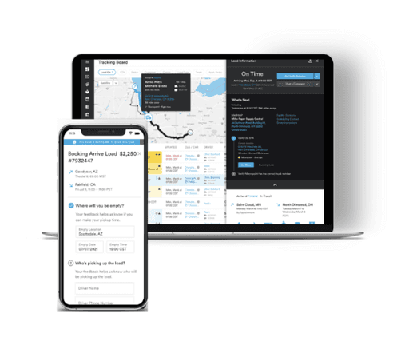
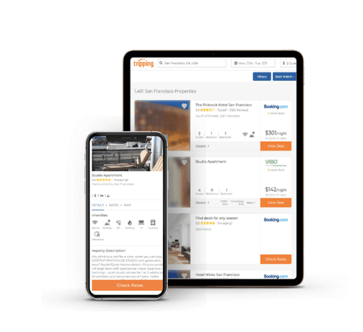
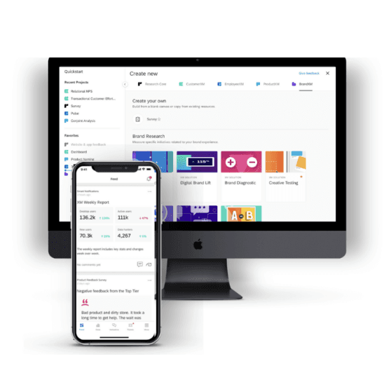
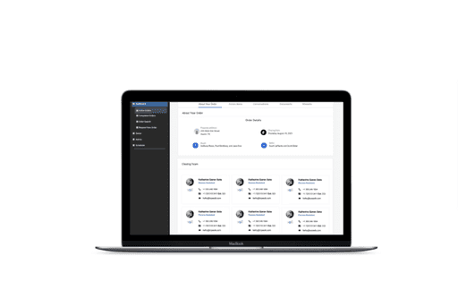

About
I’m in Austin. When I’m not designing, I’m usually traveling or taking pictures.




Eight years in design since 2017 — healthcare, logistics, fintech, and enterprise software. Six major product launches. I design the experience and I can build the front-end.
I founded Colorful Coders (youth tech education) and The Kinnect (design agency).
When I’m not designing, I’m teaching kids to code through Colorful Coders or running my design agency, The Kinnect.
What I do
Design systems
I’ve built design systems from scratch at Nevro, Vodii, and Punchh — component libraries that scale across mobile, web, and email.
Mobile-first thinking
Restaurant apps, patient tools, enterprise surveys — the hard part is making the dense stuff work on a phone.
User research
I’ve shadowed carriers during calls, observed physicians in clinical settings, and run usability studies — because the screens have to match the actual day.
Accessibility
Especially on healthcare work. The Nevro patient app had to stay usable for people logging pain, not just for a demo on a good screen.
Production front-end
I implement my own designs in production code and sit with engineering without a translation layer.